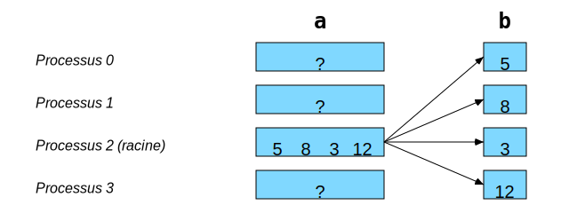
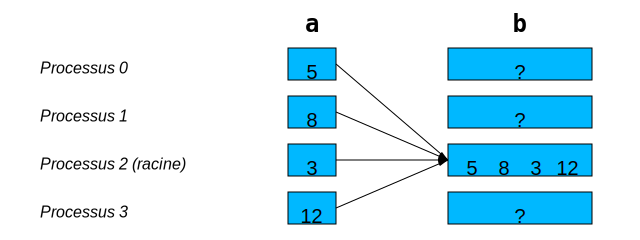
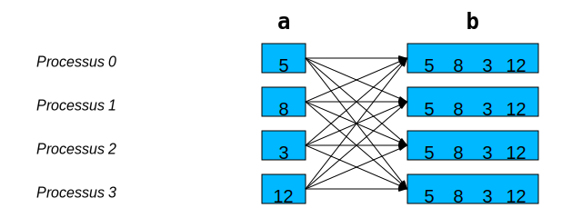
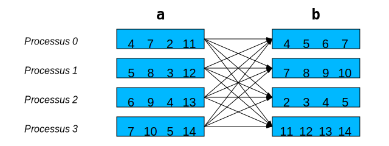
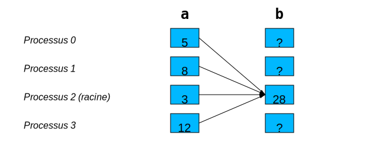
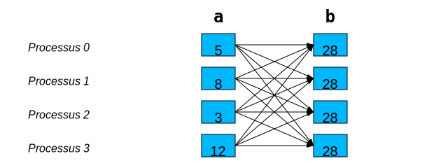

Communications collectives#
Les communications collectives peuvent faire :
des déplacements de données
MPI_BcastMPI_ScatterMPI_Gather,MPI_AllgatherMPI_Alltoall
des calculs collectifs
MPI_Reduce,MPI_Allreduce
Chaque appel à ces fonctions doit être fait par tous les processus d’un même communicateur.
Déplacements de données#
Diffusion de données avec MPI_Bcast#
Pour envoyer les mêmes informations à tous les processus d’un même communicateur, on utilise une fonction effectuant une diffusion :

En C :
// int MPI_Bcast(void *tampon, int compte, MPI_Datatype type,
// int racine, MPI_Comm comm)
ierr = MPI_Bcast(&a, 1, MPI_INT, 2, MPI_COMM_WORLD);
# bcast(objet: Any, racine: int = 0) -> Any
a = comm.bcast(a, 2)
Distribution de données avec MPI_Scatter#
Pour envoyer une portion des données à chaque processus d’un même communicateur, on utilise une fonction effectuant une distribution :

En C :
// int MPI_Scatter(
// void *envoi, int compte_envoi, MPI_Datatype type_envoi,
// void *recep, int compte_recep, MPI_Datatype type_recep,
// int racine, MPI_Comm comm)
ierr = MPI_Scatter( a, 1, MPI_INT,
&b, 1, MPI_INT, 2, MPI_COMM_WORLD);
# scatter(envoi: Sequence[Any] | None, racine: int = 0) -> Any
b = comm.scatter(a, 2)
Regroupement de données avec MPI_Gather#
Pour récupérer plusieurs portions de données dans un seul processus d’un communicateur, on utilise une fonction effectuant un regroupement :

En C :
// int MPI_Gather(
// void *envoi, int compte_envoi, MPI_Datatype type_envoi,
// void *recep, int compte_recep, MPI_Datatype type_recep,
// int racine, MPI_Comm comm)
ierr = MPI_Gather(&a, 1, MPI_INT,
b, 1, MPI_INT, 2, MPI_COMM_WORLD);
# gather(envoi: Any, racine: int = 0) -> list[Any] | None
b = comm.gather(a, 2)
Regroupement à tous avec MPI_Allgather#
C’est l’équivalent de MPI_Gather + MPI_Bcast,
mais en plus efficace :

En C :
// int MPI_Allgather(
// void *envoi, int compte_envoi, MPI_Datatype type_envoi,
// void *recep, int compte_recep, MPI_Datatype type_recep,
// MPI_Comm comm)
ierr = MPI_Allgather(&a, 1, MPI_INT,
b, 1, MPI_INT, MPI_COMM_WORLD);
# allgather(envoi: Any) -> list[Any]
b = comm.allgather(a)
Transposition globale avec MPI_Alltoall#
C’est l’équivalent de MPI_Scatter * MPI_Gather,
mais en plus efficace :

En C :
// int MPI_Alltoall(
// void *envoi, int compte_envoi, MPI_Datatype type_envoi,
// void *recep, int compte_recep, MPI_Datatype type_recep,
// MPI_Comm comm)
ierr = MPI_Alltoall(a, 1, MPI_INT,
b, 1, MPI_INT, MPI_COMM_WORLD);
# alltoall(envoi: Sequence[Any]) -> list[Any]
b = comm.alltoall(a)
Calculs collectifs#
Opérations de réduction#
C’est l’équivalent d’un MPI_Gather avec une boucle effectuant une
opération de réduction. Voici quelques opérations de réduction :
Opération |
Constante MPI |
Op([3, 5]) |
|---|---|---|
Maximum |
|
5 |
Minimum |
|
3 |
Somme |
|
8 |
Produit |
|
15 |
ET logique |
|
Vrai |
OU logique |
|
Vrai |
OU exclusif logique |
|
Faux |
ET binaire |
|
1 (001 = 011 & 101) |
OU binaire |
|
7 (111 = 011 | 101) |
OU exclusif binaire |
|
6 (110 = 011 ^ 101) |
Réduction avec MPI_Reduce#
Voici un exemple de réduction effectuant une somme :

En C :
// int MPI_Reduce(
// void *envoi, void *recep, int compte, MPI_Datatype type,
// MPI_Op op, int racine, MPI_Comm comm)
ierr = MPI_Reduce(&a, &b, 1, MPI_INT,
MPI_SUM, 2, MPI_COMM_WORLD);
# reduce(envoi: Any, op: Op=SUM, racine: int = 0) -> Any | None
b = comm.reduce(a, MPI.SUM, 2)
Réduction et diffusion avec MPI_Allreduce#
C’est l’équivalent de MPI_Reduce + MPI_Bcast,
mais en plus efficace :

En C :
// int MPI_Allreduce(
// void *envoi, void *recep, int compte, MPI_Datatype type,
// MPI_Op op, MPI_Comm comm)
ierr = MPI_Allreduce(&a, &b, 1, MPI_INT,
MPI_SUM, MPI_COMM_WORLD);
# allreduce(envoi: Any, op: Op=SUM) -> Any
b = comm.allreduce(a, MPI.SUM)
Division de l’espace de travail#
La stratégie la plus triviale consiste à diviser l’espace de travail en portions plus ou moins égales selon une dimension.
Puisque la taille
Nd’une dimension n’est pas nécessairement un multiple desize, on ne peut pas faire une division entière deNparsizepour définir une taille unique de portion. On risquerait alors d’oublier des éléments à calculer.Par contre, on peut intégrer
ranketrank + 1dans le calcul des bornes inférieure et supérieure d’une portion de calcul, ce qui permet de gagner en résolution lors de la division entière tout en assurant le calcul global de0àN - 1, inclusivement :
En C :
int debut = rank * N / size;
int fin = (rank + 1) * N / size
En Python :
debut = rank * N // size
fin = (rank + 1) * N // size
Pour
rank == 0,debutvaudra effectivement0La
finderankest ledebutderank + 1Pour
rank == size - 1,finvaudra effectivementNLes itérations se font dans l’intervalle :
debut<=i<fin
Exemple - Intégration par la méthode des rectangles#
Soit la fonction :
Calculons en parallèle une approximation de l’intégrale \(I\) de cette fonction dans l’intervalle allant de \(0\) à \(\pi\) :